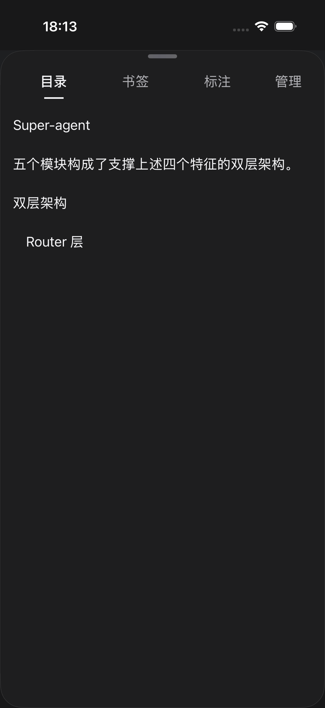
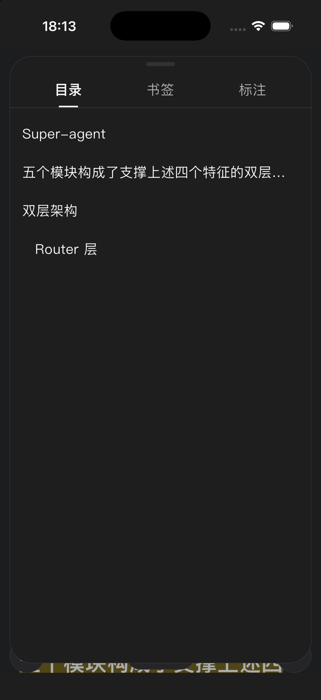
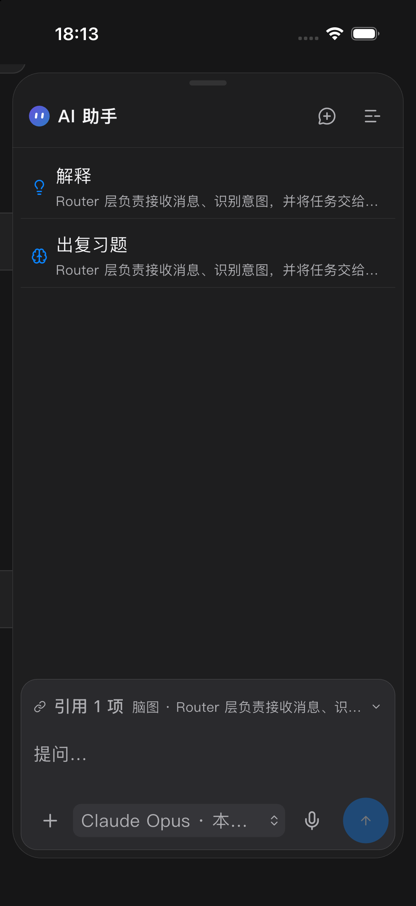
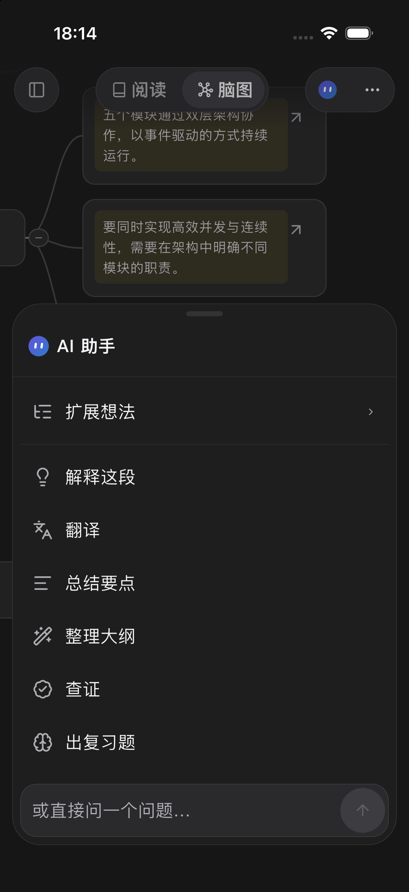
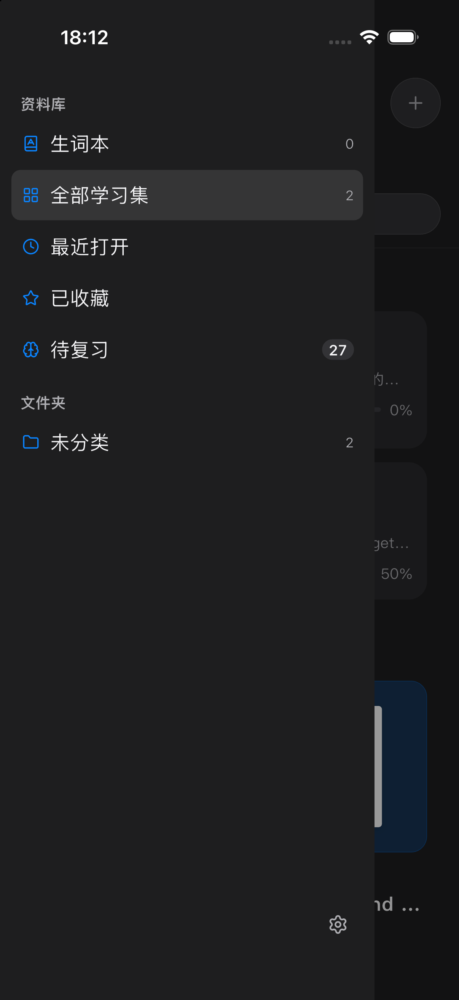
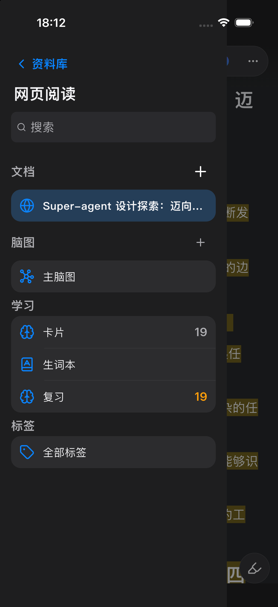

真实 iPhone 模拟器运行截图，使用本地示例资料。原生导航与 Flutter 页面均经过运行验收。

把手后直接显示文字标签，管理与标签同行；无文档标题栏、关闭按钮及内层卡片。

无独立文档标题栏；目录、书签、标注直接铺在面板底板，添加和排序操作随内容显示。

完整对话默认展开；推荐操作使用平面列表，输入和发送避让键盘。

临时操作使用 70% 初始高度，输入区保持贴底。

侧滑 Drawer 保留外部可点击区域，点选、遮罩、滑动和返回均可退出。

侧滑 Drawer；文档单行省略，去掉右上角返回文字，保留资料库入口。